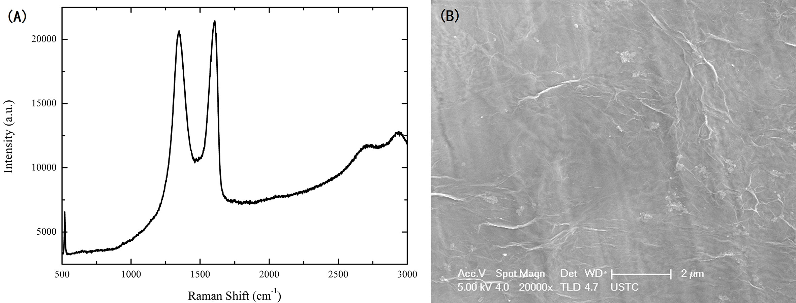
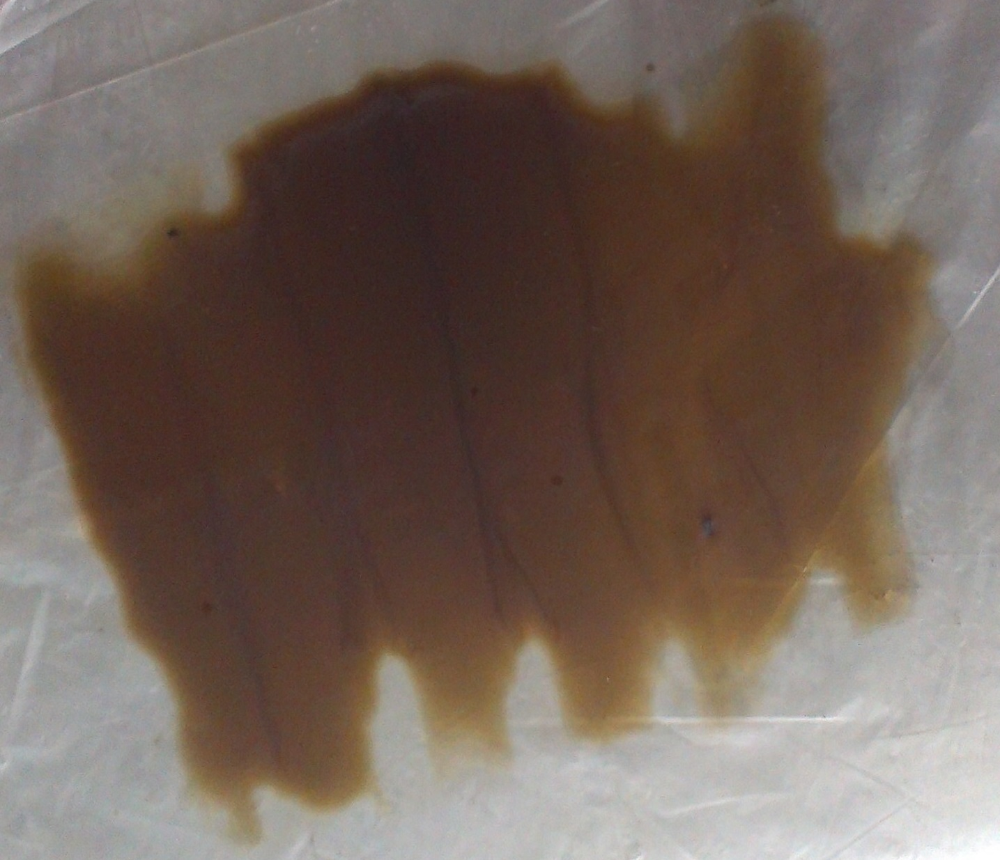
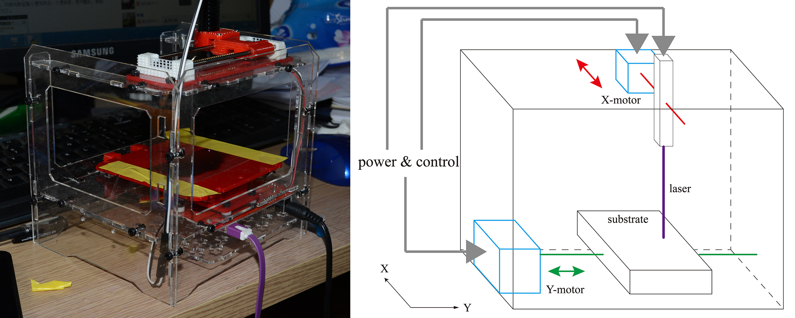
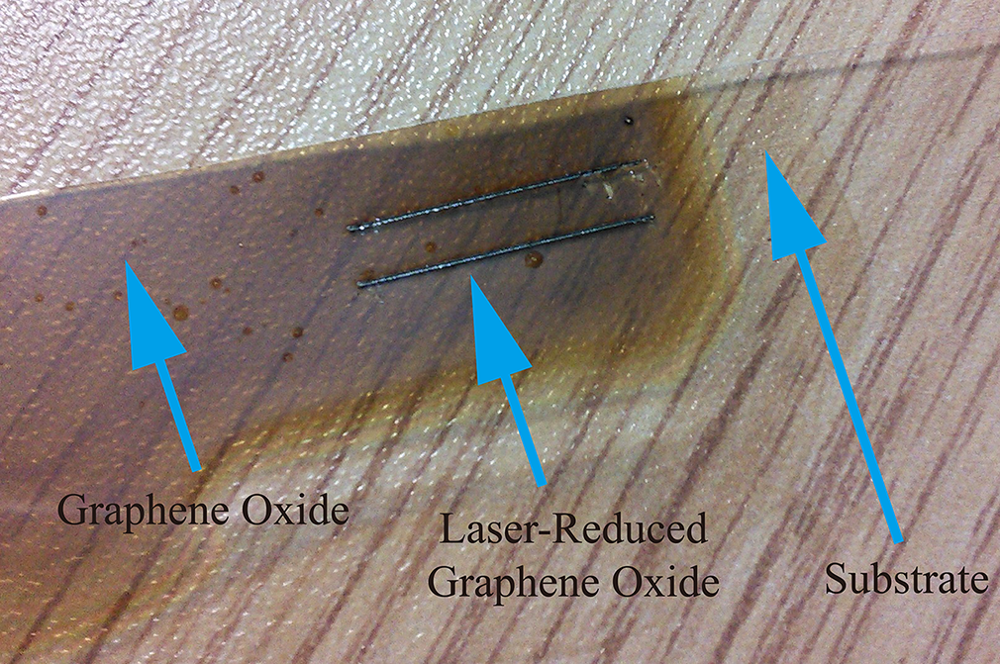
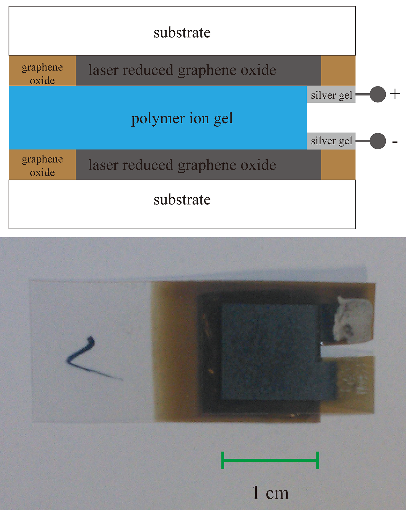
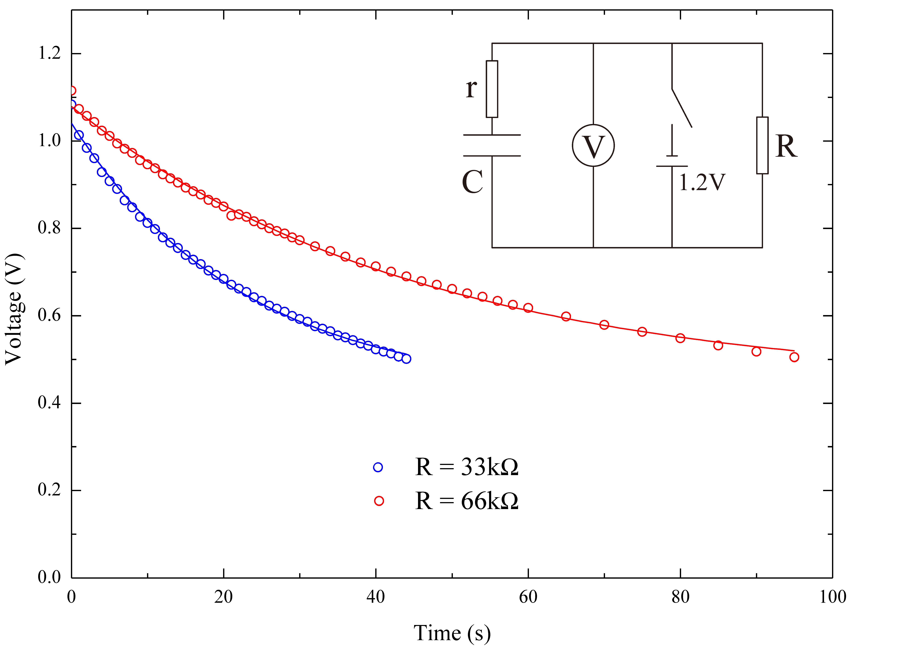
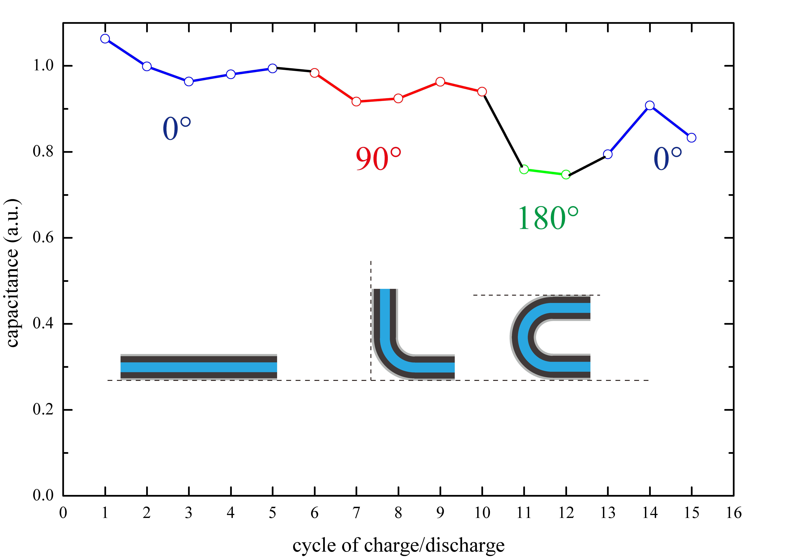

Laser Reduced Graphene Oxide Supercapacitor Project [PDF(Chinese)]
This work is a one-year (May 2013 - May 2014) undergraduate innovation project sponsored by the Ministry of Education of the People's Republic of China. It was accomplished by me and Yuan Cao.
Graphene membrane have both high specific surface area and high electrical conductivity. These properties indicates its potential application as electrode in battaries and supercapacitors. We developed a fast and simple technology to synthesize graphene membrane from graphene oxide using normal laser. Such membrane was used along with ion gel to manufacture supercapacitors, which achieve high power and energy density with fine bending performance. The idea is inspired by the work of El-Kady, et al. in 2012:
First, graphene oxide solution is produced using the Modified Hummer's method from graphite, KNO3, KMnO4, and concentrated sulfuric acid. Single-layered graphene oxide is separated by centrifuge.

(A) Raman spectroscopy of graphene oxide (B) SEM image of graphene oxide
We use cheap polyethylene terephthalate (PET) film as the base of the supercapacitors. One side of the film is coated with graphene oxide solution, and dried under 50℃, resulting in transparent brown graphene oxide membrane of surface density of about 0.2 mg/cm2.

Graphene oxide membrane on PET film
A programable 2D laser scanner is used to create reduced graphene oxide domain of given shape on the film. A 450 nm 100 mW laser generator is driven by two motors, which could achieve precision of 0.1 mm with the total cost below 70 dollars. The graphene oxide membrane is scanned by the laser line by line, each line slightly overlaps with its neighbors, to form a rectangle continuous reduced graphene oxide membrane, which would be used as the electrode of the supercapacitors later.

Photo and structure of 2D laser scanner
After being scanned, the graphene oxide inflates and turns black.

Two ribbons of reduced graphene oxide on the membrane
Polymer ion gel is used as the dielectric of the supercapacitors. 2.5 g polyvinyl alcohol (PVA) powder is dissolved in 20 mL pure water under 90℃, and then mixed with 1.8 mL of 80% phosphoric acid. After cooling to room temperature, about 0.1 mL of ion gel is glued to the reduced graphene oxide membrane of size 1 CM x 1 CM. Two membranes are glued togethor, each has a droplet of silver gel as the lead. The device is placed in dark and cool environment for hours to eventually dry out.

Structure and photo of Supercapacitor
The performance of the supercapacitor is measured. The supercapacitor is charged by a 1.2 V DC power supply, and discharges with different loads. The discharging curve shows typical exponential characteristics. Then we could calculate the capacitance from the RC time constant and inner resistance, which is 650 μF.

Discharging curve of the supercapacitor
Two supercapacitors are connected in series to power a yellow LED light bulb
Laser-reduced graphene oxide supercapatitors have approving bending performance. Capacitance of the supercapacitor only decreases by 20% when being bended by 180°, and could be restored after multiple bending.

Bending performance of supercapacitor